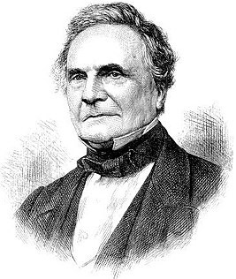

Чарлз Бэббидж

Чарлз Бэббидж (26 декабря 1791 года - 18 октября 1871 года) - английский математик, изобретатель первой аналитической вычислительной машины.
Ча́рльз Бэ́ббидж (англ. Charles Babbage; 26 декабря 1791, Лондон, Англия — 18 октября 1871, там же) — английский математик, изобретатель первой аналитической вычислительной машины. Иностранный член-корреспондент Императорской академии наук в Санкт-Петербурге (1832). Труды по теории функций, механизации счёта в экономике. Сконструировал и построил (1820-22) машину для табулирования. С 1822 работал над постройкой разностной машины. В 1833 разработал проект универсальной цифровой вычислительной машины — прообраза современной ЭВМ. Чарльз Бэббидж родился 26 декабря 1791 года в Лондоне. Его отец, Бенджамин Бэббидж, был банкиром. Мать звали Элизабет Бэббидж, в девичестве — Тип (англ. Teape). В детстве у Чарльза было очень слабое здоровье. В 8 лет его отправили в частную школу в Альфингтоне на воспитание священнику. На тот момент его отец уже был достаточно обеспечен, чтобы позволить обучение Чарльза в частной школе. Бенджамин Бэббидж попросил священника не давать Чарльзу сильных учебных нагрузок из-за слабого здоровья. После школы в Альфингтоне Чарльз был отправлен в академию в Энфилде, где по существу и началось его настоящее обучение. Именно там Бэббидж начал проявлять интерес к математике, чему поспособствовала большая библиотека в академии. После обучения в академии Бэббидж обучался у двух репетиторов. Первый был священником, жившим возле Кембриджа. По словам Чарльза, священник не дал бы ему тех знаний, который он мог получить, обучаясь у более опытного репетитора. После священника у Бэббиджа был репетитор из Оксфорда. Он смог дать Бэббиджу основные классические знания, достаточные для поступления в колледж. В 1810 году Бэббидж поступил в Тринити-колледж в Кембридже. Однако основам математики он обучался самостоятельно по книжкам. Он тщательно изучал труды Ньютона, Лейбница, Лагранжа, Лакруа, Эйлера и других математиков академий Санкт-Петербурга, Берлина и Парижа. Бэббидж очень быстро обогнал своих преподавателей по знаниям и был сильно разочарован уровнем преподавания математики в Кембридже. Более того, он заметил, что Британия в целом заметно отстала от континентальных стран по уровню математической подготовки. В связи с этим он решил создать общество, целью которого являлось внесение современной европейской математики в Кембриджский университет. В 1812 году Чарльз Бэббидж, его друзья, Джон Гершель (John Herschel) и Джордж Пикок (George Peacock) и ещё несколько молодых математиков основали «Аналитическое общество». Они стали проводить собрания. Обсуждать различные вопросы, связанные с математикой. Начали публиковать свои труды. Например, в 1816 году они опубликовали переведённый ими на английский язык «Трактат по дифференциальному и интегральному исчислению» французского математика Лакруа, а в 1820 году опубликовали два тома примеров, дополняющих этот трактат. Аналитическое общество своей активностью инициировало реформу математического образования вначале в Кембридже, а затем и в других университетах Британии. В 1812 году Бэббидж перешёл в колледж Св. Петра (Peterhouse). А в 1814 году он получил степень бакалавра. В 1816 году он стал членом Королевского Общества Лондона. К тому времени он написал несколько больших научных статей в разных математических дисциплинах. В 1820 году он стал членом Королевского Общества Эдинбурга и Королевского Астрономического Общества. В 1827 году он похоронил отца, жену и двоих детей. В 1827 году он стал профессором математических наук в Кембридже, и занимал этот пост в течение 12 лет. После того, как он покинул этот пост, он большую часть своего времени посвятил делу его жизни — разработке вычислительных машин. Последние годы жизни Бэббидж посвятил философии и политической экономии. Чарльз Бэббидж умер в возрасте 79 лет 18 октября 1871 года. Похоронен на кладбище Кенсал Грин (англ. Kensal Green Cemetery) в Лондоне. Мозг Чарльза Бэббиджа был извлечен после его смерти и в течение 36 лет хранился в музее Хантера в Глазго. Впоследствии он был препарирован профессором Чарльзом Стюартом. Британское Королевское общество искусств опубликовало результаты и фотографии препарации в книге «Описание мозга мистера Чарльза Бэббиджа» (Description of the Brain of Mr. Charles Babbage)